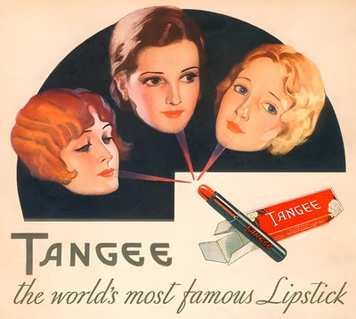
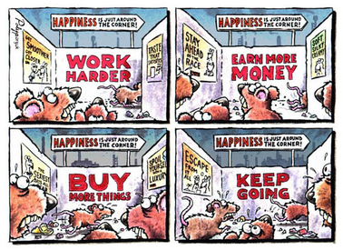
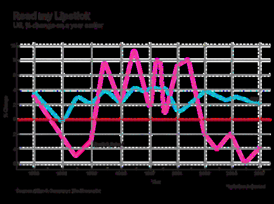
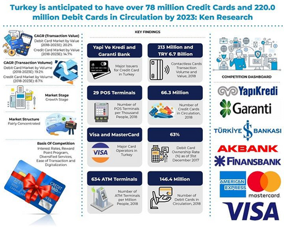
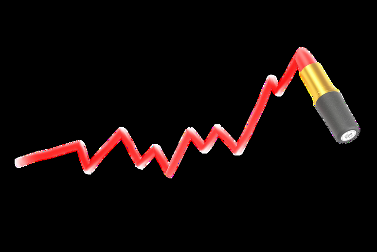
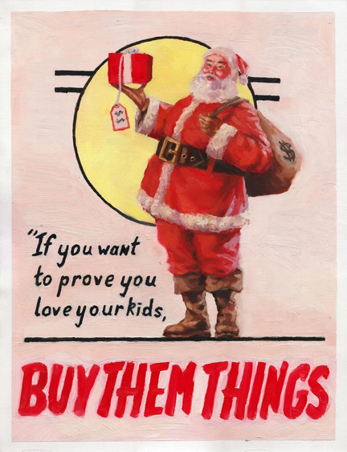

In the new year, you should be your best version! Have a new workout routine! Read more books! See new places! You are getting old, don't let life pass you by! Every year, we see these kinds of slogans everywhere. These words seem to try to convince us that we have left behind a very inefficient, unpleasant, and bad year. So, what should we do? It is best to sign up for a gym, buy new clothes and skincare products, and start looking for better places to travel. Does it matter who you are? Just consume more.
To Have It Instead of Consuming It: Consumerism
Abela (2006) defines consumerism as "excessive attachment to material possessions." In the early 18th century, the concept of consumerism developed as new shops, products, and advertisements became more common. People started to define themselves by what they have instead of who they are. Hence, this also changed social classes; poor people copied the clothes of the rich to look better, and the middle class used their money to show they were just as important as the aristocrats (Benson, 1994).
It has been more than 300 years, and here we are! As humanity, we are standing still. But as authors, we still wonder: why do we want to consume more? People use objects to compensate for their insecurities and stress, fill their inner emptiness, and prove their social status.
Why Do We Consume?
Identity and Meaning: In modern life, we define ourselves with the objects we have. Those possessions do not become part of our characters.
Social Emulation: According to McKendrick's Trickle Down theory, as the lower classes imitate the upper classes, the demand for luxury goods spreads across the entire population. This keeps the economy moving.
An Effort to Forget Unhappiness: The challenges that bring industrialization and modern work life have turned consumption into a 'compensation mechanism.' Stearns (1997) says that as middle-class jobs and labor become less satisfying, people try to fill this avoid in their professional lives through consumption.
Curiosity for Innovation: Even if the object we have is still usable, we buy a new one due to catching the fashion trends (Benson, 1994).
Marketing and Credit: Advertising tells us that objects make us happier, and credit cards allow us to achieve this dream immediately, even if we do not have money.
Way of Showing Love: Sometimes we want to show our love with gifts, not through our actions. Caring for someone cannot be reflected in the number of gifts you give, but in the actions that show you care.
Consumer society thrives on the instability of desires and insatiability of needs. — Zygmunt Bauman
The Capitalist Loop: Work, Buy, Owe, Repeat
Consumer culture keeps translating care and identity into proof that can be displayed, priced, and compared. In capitalism's logic of constant upgrading, even "being a better me" becomes a product category: better skin, better body, better home, better lifestyle. The promise is personal freedom—choose your style, choose your identity—but the method is repetitive: work harder, buy more, feel inadequate again, and repeat. This is not accidental. As Bauman (2007) argued, consumer society thrives on "the instability of desires and insatiability of needs."
The system requires endless dissatisfaction to keep circulation alive. Perfection is sold through products, yet those products are designed both functionally and socially to become lies. Your smartphone works, but last year's model marks you as "behind." Of course, you are free to choose, but only within the market's pre-set options.
Consistent with research on compensatory consumption, self-threat can shift preferences toward symbolic purchases aimed at "repairing" the self. However, these choices may also have the opposite effect by decreasing satisfaction after the purchase (Mo et al., 2025).
When Crisis Hits: The Lipstick Effect
But what happens when the economy itself collapses? Do people finally stop consuming? When a crisis hits, like in the current situation in our lives, theoretically, we expect luxury consumption behavior to decline overall. Is the crisis itself a driving factor in the decrease in consumption? The answer is really shocking: consumer behavior does not disappear it shapeshifts.
This phenomenon, termed the "lipstick effect," refers to the tendency of consumers to purchase more affordable cosmetic and beauty products during economic downturns, forgoing spending on other luxuries like jewelry or clothes and purchasing more makeup instead. The term was first identified by Estée Lauder chairman Leonard Lauder in 2001, when cosmetic sales surged following the 9/11 attacks despite economic contraction. Historical evidence reveals a similar pattern during the Great Depression, when cosmetic sales increased by 25% even as overall spending plummeted.


According to empirical research conducted by MacDonald and Dildar (2020), there was an increase in cosmetic spending among consumers aged 18 to 40 during the 2008 Great Recession, independent of their employment or marital status. This study analyzed data from over 127,000 U.S. households during the Great Recession. This spending shift represents an economic substitution effect: consumers reduce spending on higher-priced appearance-related goods like clothing while maintaining or increasing purchases of more affordable cosmetic alternatives. During the Great Recession, despite cosmetic prices rising relative to women's apparel prices, younger consumers strategically reallocated their budgets away from expensive garments toward lower-cost beauty products.


The Numbers Behind the System
We have built a civilization that defines progress by accumulation, success by possession, and identity by consumption. But what have we truly gained? Consider the raw data: Türkiye's card payments surged 74% year-on-year in December 2024, reaching TRY 1.7 trillion, while individual credit card debt climbed to TRY 2.068 trillion (BDDK, 2025; BKM, 2025). In the U.S., household debt hit $18.39 trillion, with credit card balances alone at $1.21 trillion, 5.87% higher than a year earlier (New York Fed, 2025). These are not just numbers; they are symptoms of a system that profits from identity, packages anxiety as aspiration, and finances "freedom" through revolving debt.

Under threat and uncertainty, consumption behavior shifts from big goods to psychologically strategic purchases: small luxuries that feel like control, confidence, and continuity. This shows how consumption patterns have a deeper function and power. Even in collapse, the system finds a way to channel distress back into the market.

Conclusion
So here we stand, more than 300 years after consumerism took root, and as humanity, we are standing still. Everything is a lie: the promise that the next purchase will complete you, that material wealth equals success, and that you must consume to prove your worth. But here is the truth they do not advertise: you are not what you own. Your value cannot be measured in possessions.
The lipstick effect during crises, the holiday spending surges, the New Year campaigns are all variations of the same mechanism: converting human vulnerability into market transactions. Your identity exists beyond the brands you wear, the debt you carry, or the "new year, new you" campaigns designed to restart the cycle every January 1st. You finance the "new year, new me" fantasy not because it works, but because the alternative, the emptiness, feels unbearable.
It is recognized that the best version of you cannot be purchased. It can only be lived consciously, deliberately, and freely.
Selected References
- Abela, A. V. (2006). Marketing and consumerism: A response to O'Shaughnessy and O'Shaughnessy. European Journal of Marketing, 40(1/2), 5–16.
- Bauman, Z. (2007). Consuming Life. Polity Press.
- Benson, J. (1994). The Rise of Consumer Society in Britain, 1880–1980. Longman.
- MacDonald, D., & Dildar, Y. (2020). Social and psychological determinants of consumption: Evidence for the lipstick effect during the Great Recession. Journal of Behavioral and Experimental Economics, 86, 101527.
- Mo, Z., Ma, J., Hamilton, R., & Zhao, Y. (2025). When compensatory consumption backfires: The asymmetric effect of self-threat on consumption preference and satisfaction. Journal of Business Research, 186, 115013.
- Stearns, P. N. (1997). Stages of consumerism: Recent work on the issues of periodization. The Journal of Modern History, 69(1), 102–117.